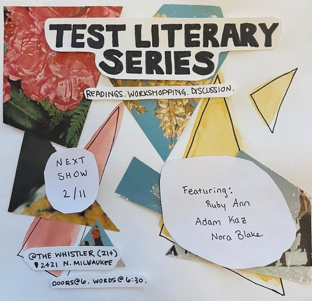

Test Literary Series
Hey y’all! Our next Test event is one week away, Wednesday, February 11th! Please join us to hear from our featured readers:
Ruby Ann
Adam Kaz
Nora Blake
Doors open at @whistlerchicago at 6, readings will be at 6:30. Jazz follows at 9. See ya there!